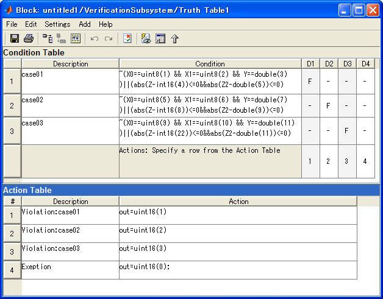

Truth Table block creation for user defined tests
- Support MATLAB R2007a
- Requires Simulink® and Stateflow®.
- Requires Simulink Verification and Validation™
- Requires Simulink Design Verifier™
Contents
Functional details
This function can be used to generate tests which an user wanted and to compare Simulink outputs with expected output easily by using Simulink Design Verifier.
(1) Specify input test vectors and expected outputs in Excel spread sheet.
(2) Click "User defined test" button
(3) A model will be created like following
You need to place the generated "UserDefinedTest" block into your model and connect lines to corresponding signals as listed in the Excel sheet.
Explanation of (A) Compare_ExpectedOutputs Truth Table in Fig.(3)
In this Truth Table block, a logic of verification criteria is described by using propositional logic "implies": (~P||Q). For example, the following conditions are desired in case01 in the Excel sheet.
When X0==uint8(1) && X1==uint8(2) && Y==double(3) is satisfied, abs(Z-int16(4))<=0 && abs(Z2-double(5))<=0 should be satisfied.
If this condition is falsified, the output "out" of Truth Table block becomes 1. As a result, a violation will be asserted from Assertion block.
If there are no corresponding inputs with each conditions in Condition Table, the output "out" becomes 0 and Assertion block will not be asserted.

Explanation of (B)TestObjective Truth Table in Fig.(3)
In this Truth Table block, it is configured to generate tests which satisfy conditions case01-03 in the Excel sheet by using Test case generation provided by Simulink Design Verifier. "sldv.test(1)" in the action table offers Simulink Design Verifier to generate a test input to reach to the action row.
How this feature can be used?
There are two types of usage of this feature.
- Test generation + Simulation By using Test generation feature of Simulink Design Verifier, you can create Test harness with test vectors which gives expected inputs specified in the Excel sheet. You can examine the relation between inputs and expected outputs by running simulation. This means that you don't need to create test vectors manually.
- Use property proving By running property proving feature of Simulink Design Verifier for the model containing a block generated by this feature, proving will be done for the verification propositions specified in Compare_ExpectedOutputs Truth Table block. If there are input patterns which make violation for the verification propositions, Test harness model including corresponding counterexamples will be generated. You can examine the counterexamples by running simulation for the Test harness model.
Rules for specifying user defined test.
- Row 1: Specify variable names in 2nd column and after. These variables names correspond to input names of Truth Table block.
- Row 2: Specify labels u<n> or e<n> , where a label "u<n>" shows n-th input and "e<n>" shows n-th expected output.
- Row 3: Specify datatype name for each signals (double, single, int8, uint8, int16, uint16, int32, uint32, boolean)
- Row 4: Specify a name of a test case in the 1st column and specify values of each inputs and expected outputs corresponding to each column.
How to run
- Open cmtdtool_sampledata_en.xls in cmtdtool's install directory.
- Select A4:F9 in "UserDefinedTest" sheet.
- Click "User defined test" button in the cmtdtool GUI.
- "UserDefinedTest" subsystem will be created in a new model.
- Run the following commands and you will see that the same operation can be done by API call.
xls2TestObjective('cmtdtool_sampledata_en.xls','UserDefinedTest','A4:F9');